Candidate List 20261010Last night — ZTF: 2,095 passed basic cuts (26 young) · LSST: 0 passed basic cuts (0 young)Previous Day Next Day
Section 1: New Sources (age<1d) Section 2: Old (1-5d) sources observed last nightplaceholder
Section 2: Older Sources Observed Last Night (7)
0. [ZTF] ZTF26abzwbsb (FBOT?) [Back to Top] [Share] [Trigger Swift] [Fritz Alert] [Fritz Source] [Lasair]RA, Dec: 317.57819, 9.73757 21h10m18.77s, 9d44m15.24sGalactic (l, b): 59.57804, -24.99031 ext(g-r) = 0.097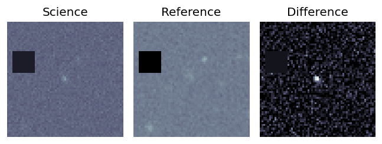
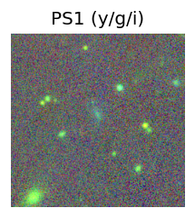
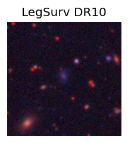
TESS: Sectors [55 82]
SDSS (<15 kpc):Found SDSS phot-z: z=0.24; peak abs mag = -21.22
PS1: 0 sources in 3 arcsec
LegacySurvey: 1 sources in 3 arcsec Closest: d = 1.73 arcsec, 13.5 deg (east of north) photoz=0.1 (68% bounds 0.07, 0.12), type=SER peak abs mag (ext. corrected) = -19.13 (68% bounds -18.39, -19.56)
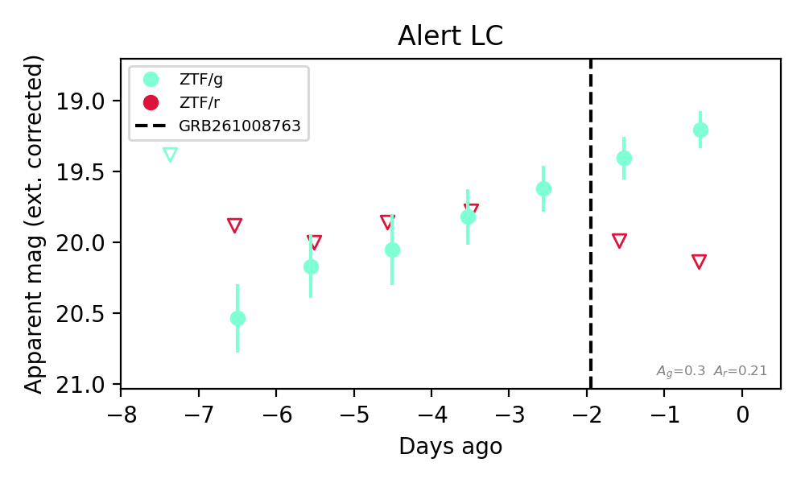
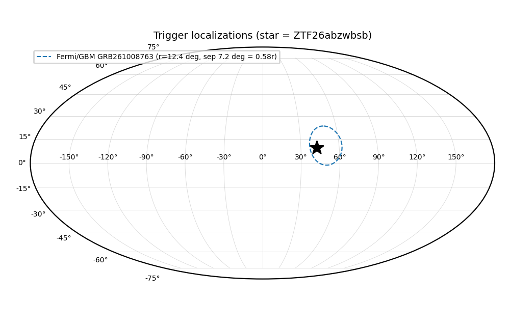
Extinction-corrected gr color:
From alerts: -0.93 +/- 99 mag
Rise Rate:
g: 0.21 mag/day
Fade Rate:
1. [ZTF] ZTF26acaetjg (Afterglow?) [Back to Top] [Share] [Trigger Swift] [Fritz Alert] [Fritz Source] [Lasair]RA, Dec: 294.88673, -13.50568 19h39m32.81s, -13d-30m-20.44sGalactic (l, b): 26.00958, -16.66742 ext(g-r) = 0.229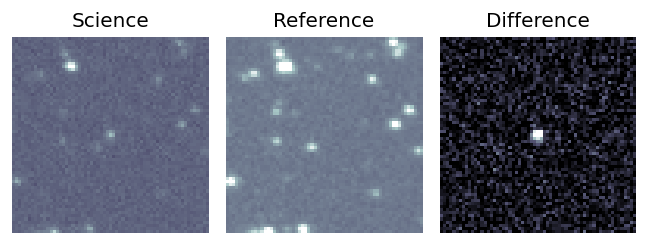
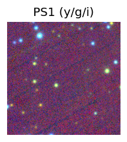
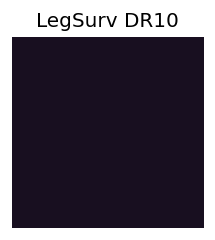
TESS: Sectors [ 54 81 92 116]
PS1: 0 sources in 3 arcsec
LegacySurvey: 0 sources in 3 arcsec
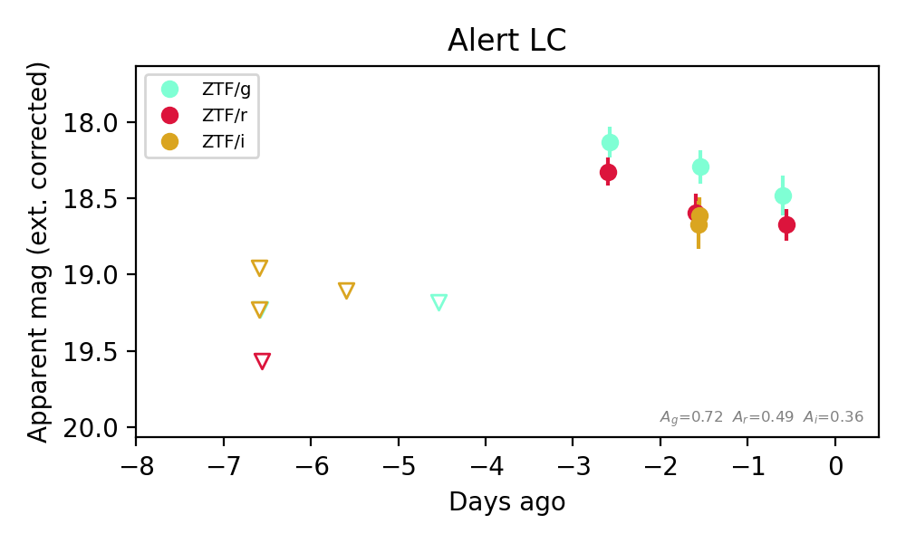
Extinction-corrected gr color:
From alerts: -0.19 +/- 0.17 mag
Extinction-corrected gi color:
From alerts: -0.34 +/- 0.14 mag
Extinction-corrected ri color:
From alerts: -0.04 +/- 0.15 mag
Consistent with synchrotron, g-r>0!
Rise Rate:
g: 0.54 mag/day
r: 0.31 mag/day
i: 0.12 mag/day
Fade Rate:
g: 0.17 mag/day
r: 0.17 mag/day
2. [ZTF] ZTF26acaezkn (FBOT?) [Back to Top] [Share] [Trigger Swift] [Fritz Alert] [Fritz Source] [Lasair]RA, Dec: 291.59648, 46.17759 19h26m23.16s, 46d10m39.32sGalactic (l, b): 78.16896, 13.614 ext(g-r) = 0.114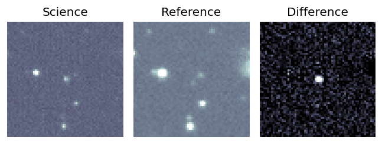
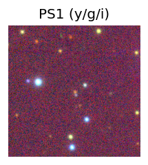

TESS: Sectors [ 14 15 40 41 54 55 74 75 81 82 119 120]
PS1: 1 source in 3 arcsec Closest: d = 1.25 arcsec photoz=0.42+/-0.02 peak abs mag = -23.01
LegacySurvey: 0 sources in 3 arcsec
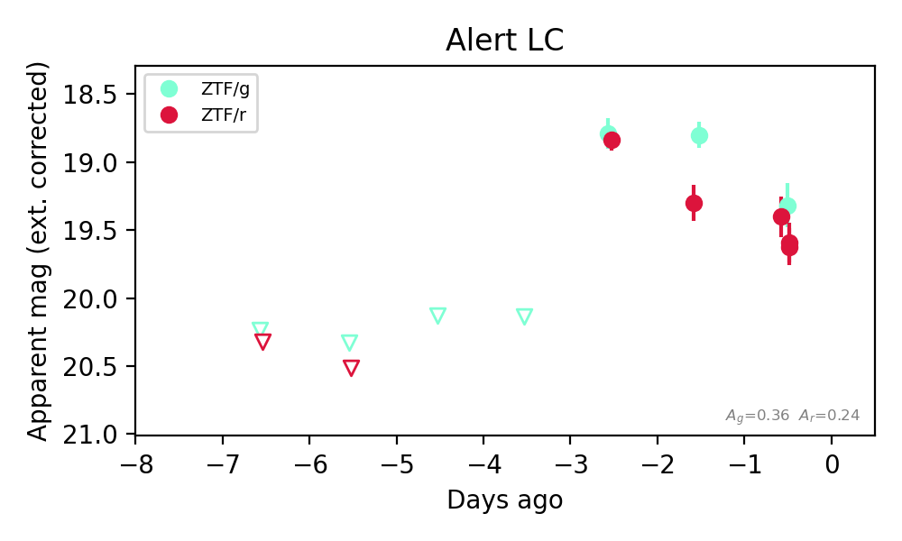
Extinction-corrected gr color:
From alerts: -0.23 +/- 0.18 mag
Rise Rate:
g: 1.41 mag/day
r: 0.56 mag/day
Fade Rate:
g: 0.21 mag/day
r: 0.35 mag/day
3. [ZTF] ZTF26abznsdq (FBOT?) [Back to Top] [Share] [Trigger Swift] [Fritz Alert] [Fritz Source] [Lasair]RA, Dec: 256.51661, 25.88537 17h 6m3.99s, 25d53m7.32sGalactic (l, b): 47.29843, 33.66744 ext(g-r) = 0.036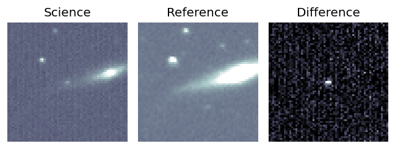
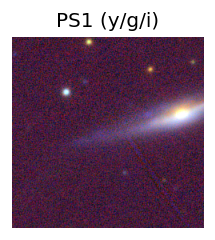
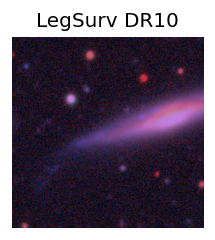
TESS: Sectors [ 25 52 79 117 118]
SDSS (<15 kpc):Found SDSS phot-z: z=0.41; peak abs mag = -23.20
PS1: 0 sources in 3 arcsec
LegacySurvey: 1 sources in 3 arcsec Closest: d = 2.65 arcsec, 113.5 deg (east of north) photoz=1.17 (68% bounds 0.53, 1.96), type=PSF peak abs mag (ext. corrected) = -25.95 (68% bounds -23.85, -27.33)
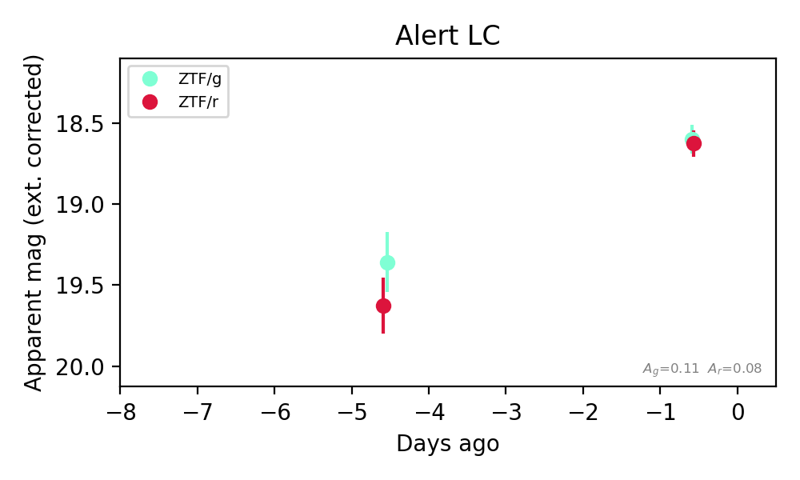
Extinction-corrected gr color:
From alerts: -0.03 +/- 0.12 mag
Consistent with synchrotron, g-r>0!
Rise Rate:
g: 0.19 mag/day
r: 0.25 mag/day
Fade Rate:
4. [ZTF] ZTF26acagwmm (FBOT?) [Back to Top] [Share] [Trigger Swift] [Fritz Alert] [Fritz Source] [Lasair]RA, Dec: 0.44147, 4.22045 0h 1m45.95s, 4d13m13.63sGalactic (l, b): 100.10896, -56.43425 WARNING: 3.7 deg from ecliptic plane ext(g-r) = 0.025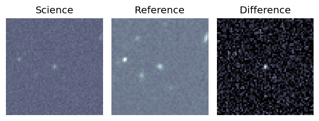
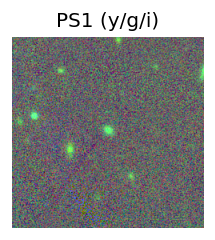
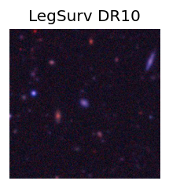
TESS: Sectors [42 70]
SDSS (<15 kpc):Found SDSS phot-z: z=0.19; peak abs mag = -20.07
PS1: 0 sources in 3 arcsec
LegacySurvey: 1 sources in 3 arcsec Closest: d = 0.36 arcsec, 54.1 deg (east of north) photoz=0.14 (68% bounds 0.11, 0.17), type=SER peak abs mag (ext. corrected) = -19.39 (68% bounds -18.87, -19.83)
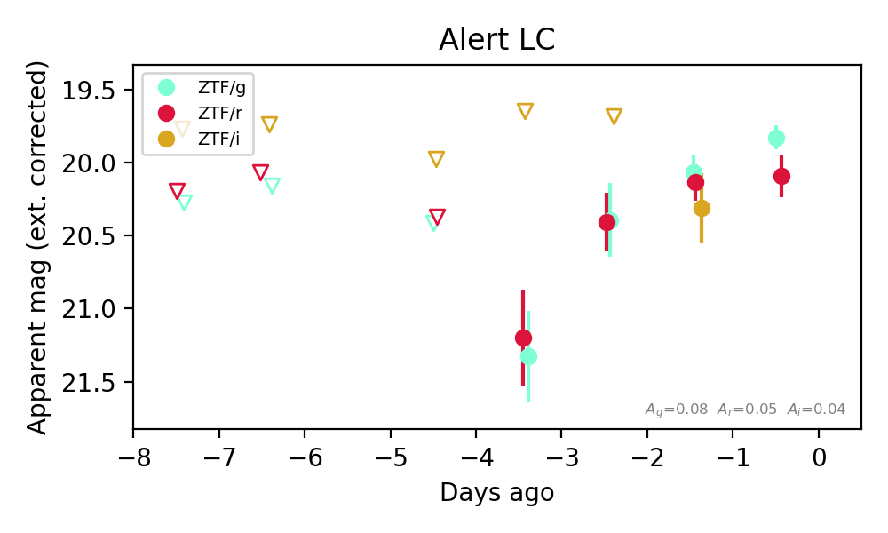
Extinction-corrected gr color:
From alerts: -0.27 +/- 0.16 mag
Extinction-corrected gi color:
From alerts: -0.25 +/- 0.26 mag
Extinction-corrected ri color:
From alerts: -0.18 +/- 0.27 mag
Consistent with synchrotron, g-r>0!
Rise Rate:
g: 0.39 mag/day
r: 0.26 mag/day
Fade Rate:
5. [ZTF] ZTF26acarmzm (Afterglow?FBOT?) [Back to Top] [Share] [Trigger Swift] [Fritz Alert] [Fritz Source] [Lasair]RA, Dec: 356.59294, 52.02564 23h46m22.31s, 52d 1m32.31sGalactic (l, b): 112.86583, -9.56986 ext(g-r) = 0.204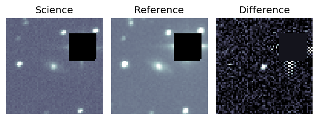
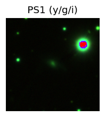

TESS: Sectors [17 24 57 84]
SDSS (<15 kpc):Found SDSS phot-z: z=0.06; peak abs mag = -18.20
PS1: 1 source in 3 arcsec Closest: d = 0.38 arcsec photoz=0.12+/-0.04 peak abs mag = -19.81
LegacySurvey: 0 sources in 3 arcsec
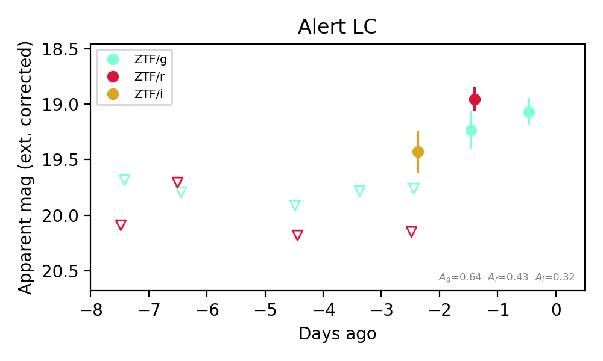
Extinction-corrected gr color:
From alerts: 0.28 +/- 0.2 mag
Extinction-corrected gi color:
From alerts: 0.33 +/- 99 mag
Extinction-corrected ri color:
From alerts: 0.72 +/- 99 mag
Consistent with synchrotron, g-r>0!
Rise Rate:
g: 0.54 mag/day
r: 1.1 mag/day
i: 0.02 mag/day
Fade Rate:
6. [ZTF] ZTF26acarzqa (FBOT?) [Back to Top] [Share] [Trigger Swift] [Fritz Alert] [Fritz Source] [Lasair]RA, Dec: 356.70721, 15.24061 23h46m49.73s, 15d14m26.21sGalactic (l, b): 100.696, -44.82354 ext(g-r) = 0.031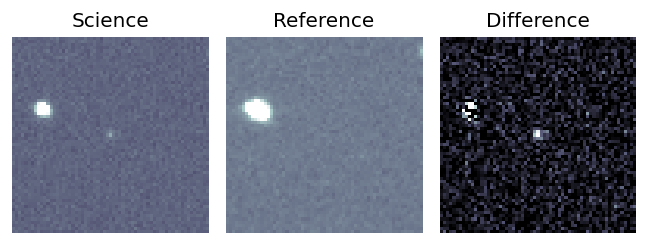
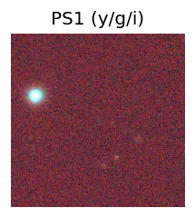
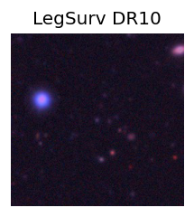
TESS: Sectors [56 83]
PS1: 0 sources in 3 arcsec
LegacySurvey: 1 sources in 3 arcsec Closest: d = 0.31 arcsec, 148.4 deg (east of north) photoz=0.34 (68% bounds 0.23, 0.52), type=REX peak abs mag (ext. corrected) = -21.33 (68% bounds -20.39, -22.4)
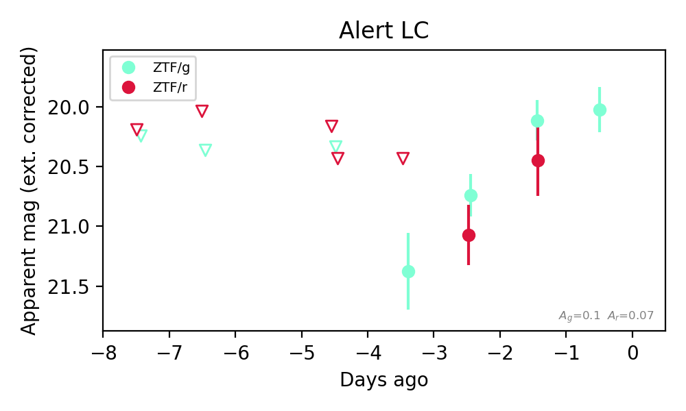
Extinction-corrected gr color:
From alerts: -0.33 +/- 0.35 mag
Consistent with synchrotron, g-r>0!
Rise Rate:
g: 0.45 mag/day
Fade Rate: